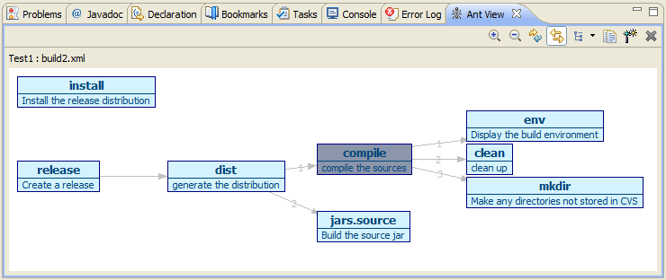

Concepts
Overview
The Ant Visualization plugin for Eclipse provides a graphical view of the structure of Ant files.
The Ant targets are shown linked by their dependencies, and may be shown in a variety of layouts:

Quick Start
After installing the plugin, perform these actions:
- Choose menu Window → Show View → Other... → Ant → Ant Visualization.
- Ensure the Linked toolbar icon (with the two straight arrows) in the new Ant View is selected (as in the image above).
- Open a build.xml file with the Eclipse Ant Editor: the structure will be shown in the Ant Visualization window.
See the Reference section for further details of
of operation.